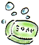

This is an archived copy of History Matters, provided by the Roy Rosenzweig Center for History and New Media. To explore this content in a new interface, visit Who Built America?.

| 1. Bull Durham is the name of a A. chewing gum B. aluminum ware C. tobacco D. clothing |
2. Seven-up is played with A. rackets B. cards C. pins D. dice |
|||
| 3. The Merino is a kind of A. horse B. sheep C. goat D. cow |
4. The most prominent industry of Minneapolis is A. flour B. packing C. automobiles D. brewing |
|||
|
5. Garnets are usually A. yellow B. blue C. green D. red |
6. The Orpington is a kind of A. fowl B. horse C. granite D. cattle |
|||
|
7. George Ade is famous as a A. baseball player B. comic artist C. actor D. author |
8. Soap is made by A. B. T. Babbitt B. Smith & Wesson C. W. L. Douglas D. Swift & Co. |
 | ||
|
9. Laura Jean Libby is known as a A. singer B. suffragist C. writer D. army nurse |
10. An air-cooled engine is used in the A. Buick B. Packard C. Franklin D. Ford |
|||
|
11. A house is better than a tent, because A. it costs more B. it is more comfortable C. it is made of wood |
12. Why does it pay to get a good education? A. it makes a man more useful and happy B. it makes work for teachers C. it makes demand for buildings for schools and colleges |
|||
|
13. If the grocer should give you too much money in making change, what is the right thing to do?
A. buy some candy off him with it B. give it to the first poor man you meet C. tell him of his mistake |
14. Why should food be chewed before swallowing? A. it is better for the health B. it is bad manners to swallow without chewing C. chewing keeps the teeth in condition |
 | ||
|
15. If you saw a train approaching a broken track you should A. telephone for an ambulance B. signal the engineer to stop the train C. look for a piece of rail to fit in |
16. If you are lost in a forest in the daytime, what is the thing to do? A. hurry to the nearest house you know of B. look for something to eat C. use the sun or a compass for a guide |
|||
|
17. It is better to fight than to run, because A. cowards are shot B. it is more honorable C. if you run you may get shot in the back |
18. Why should all parents be made to send their children
to school? Because A. it prepares them for adult life B. it keeps them out of mischief C. they are too young to work |
|||
|
19. Why do some men who could afford to own a house live
in a rented one? Because A. they don’t have to pay taxes B. they don’t have to buy a rented house C. they can make more by investing the money the house would cost |
20. Why is beef better food than cabbage? Because A. it tastes better B. it is more nourishing C. it is harder to obtain |
|||